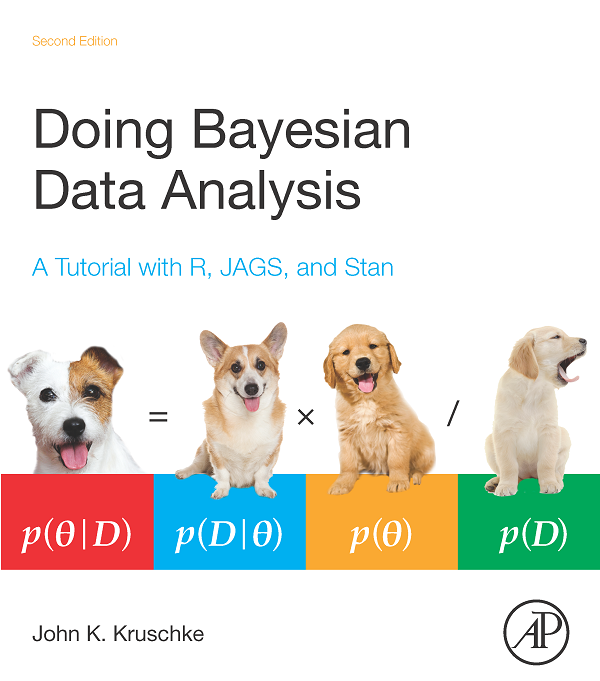
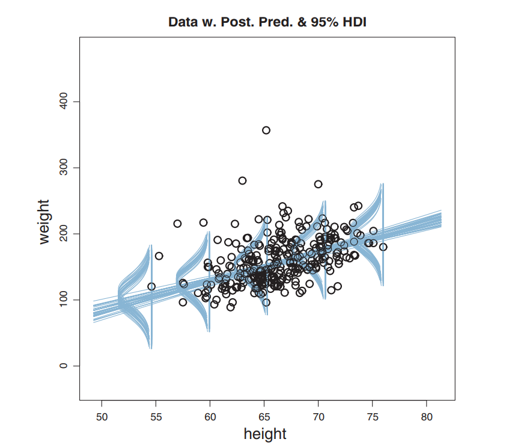
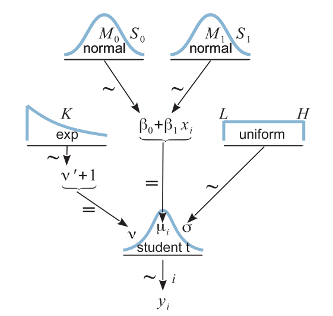
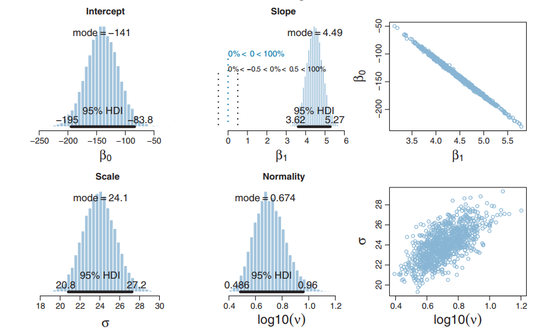
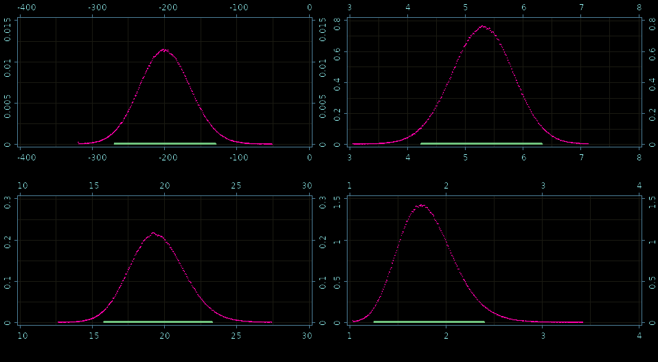

(let [dot-product (fn [xs ys] (reduce + (map * xs ys))) x-vec (vec (range 100000)) y-vec (vec (range 100000))] (dot-product x-vec y-vec))
333328333350000
Execution time: 14 ms
(let [x (fv (range 100000)) y (copy x)] (dot x y))
3.33328352E14
(with-default (with-default-engine (with-release [gpu-x (cuv (range 100000)) gpu-y (copy gpu-x)] (dot gpu-x gpu-y))))
3.33328352E14
(with-default (with-default-engine (with-release [gpu-x (entry! (cuge 1000 100000) 0.01) gpu-y (copy (trans gpu-x)) cpu-c (cuge 1000 1000)] (do (mm! 1 gpu-x gpu-y 0 cpu-c) (synchronize!) true))))
true
(init)
true
(device-count)
2
(def my-nvidia-gpu (device 0))
#'user/my-nvidia-gpu
(info my-nvidia-gpu)
{:max-grid-dim-y 65535, :total-mem 11721506816, :name "GeForce GTX 1080 Ti", :max-threads-per-multiprocessor 2048, :max-shared-memory-per-block 49152, :compute-capability-major 6, :global-memory-bus-width 352, :memory-clock-rate 5505000, :max-threads-per-block 1024, :multiprocessor-count 28, :warp-size 32, :max-registers-per-block 65536 ;;... much more data }
(def ctx (context my-nvidia-gpu))
#'user/ctx
(info ctx)
{:dev-runtime-pending-launch-count 2048 :dev-runtime-sync-depth 2 :malloc-heap-size 8388608 :stack-size 1024 :api-version 3020 :stream-priority-range (0 -1) :cache-config :prefer-none :printf-fifo-size 1048576 :device #object(jcuda.driver.CUdevice 0x12be4426 "CUdevice[nativePointer=0x0]") :shared-config :four-byte-bank-size}
(= ctx (current-context))
true
(def gpu-array (mem-alloc 1024))
#'user/gpu-array
(def main-array (float-array (range 256)))
#'user/main-array
(take 10 main-array)
(0 1 2 3 4 5 6 7 8 9)
(memcpy-host! main-array gpu-array)
#object[uncomplicate.clojurecuda.internal.impl.CULinearMemory 0x38701ca4 "uncomplicate.clojurecuda.internal.impl.CULinearMemory@38701ca4"]
(take 12 (memcpy-host! gpu-array (float-array 256)))
(0 1 2 3 4 5 6 7 8 9 10 11)
extern "C" __global__ void increment(int n, float *a) { int i = blockIdx.x * blockDim.x + threadIdx.x; if (i < n) { a[i] = a[i] + 1.0f; } };
(def kernel-source "extern \"C\" __global__ void increment (int n, float *a) { int i = blockIdx.x * blockDim.x + threadIdx.x; if (i < n) { a[i] = a[i] + 1.0f; } };") (def hello-program (compile! (program kernel-source)))
#'user/kernel-source#'user/hello-program
(def hello-module (module hello-program)) (def increment (function hello-module "increment"))
#'user/hello-module#'user/increment
(launch! increment (grid-1d 256) (parameters 256 gpu-array))
nil
(take 12 (memcpy-host! gpu-array (float-array 256)))
(1 2 3 4 5 6 7 8 9 10 11 12)
How to know something we cannot observe?
\(\Pr(H|D) = \frac{\Pr(D|H)\times \Pr(H)}{\Pr(D)}\)
.




(def rlr-source (slurp (io/file "robust-linear-regression.cl"))) (defn my-prior-model-distribution [] (library/distribution-model [:gaussian :uniform :exponential :student-t rlr-source] {:name "rlr" :mcmc-logpdf "rlr_mcmc_logpdf" :params-size 7 :dimension 4}))
#'user/rlr-source#'user/rlr-prior#'user/rlr-likelihood
REAL rlr_logpdf(const uint data_len, const uint hyperparams_len, const REAL* params, const uint dim, REAL* x) { return exponential_log(params[0], x[0] - 1) + gaussian_log(params[1], params[2], x[1]) + gaussian_log(params[3], params[4], x[2]) + uniform_log(params[5], params[6], x[3]); }
REAL rlr_loglik(const uint data_len, const REAL* data, const uint dim, const REAL* x) { const REAL nu = x[0]; const REAL b0 = x[1]; const REAL b1 = x[2]; const REAL sigma = x[3]; const uint n = (uint)data[0]; const bool valid = (0.0f < nu) && (0.0f < sigma); if (valid) { const REAL scale = student_t_log_scale(nu, sigma); REAL res = 0.0; for (uint i = 0; i < n; i = i+2) { res += student_t_log_unscaled(nu, b0 + b1 * data[i+1], sigma, data[i+2]) + scale; } return res; } return NAN; }
(def result (with-default-bayadera (with-release [rlr-likelihood (library/likelihood-model rlr-source {:name "rlr"}) rlr-prior (my-prior-model-distribution) prior (distribution rlr-prior) prior-dist (prior (fv 10 -100 100 5 10 0.001 1000)) post (distribution "rlr" rlr-likelihood prior-dist) post-dist (post params-300) post-sampler(sampler post-dist {:limits (fge 2 4 [1 10 -400 100 0 20 0.01 100])})] (mix! post-sampler {:step 384}) (histogram! post-sampler 1000))))
Posteriors: β0, β1,σ, and ν 
Thank you for donations
https://patreon.com/draganrocks